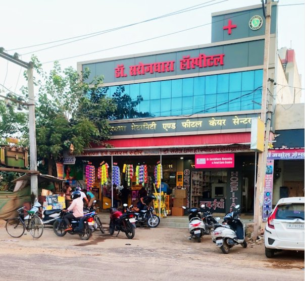
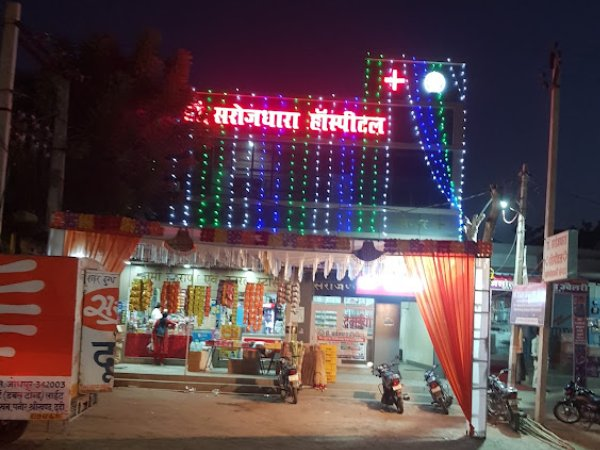
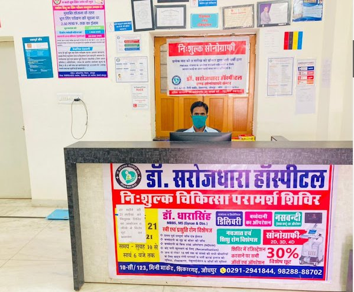

9 Things Every Expecting Mother Should Know
A guide covering nutrition, warning signs, antenatal checkups, and what to expect during each trimester of pregnancy.
Maternity • Gynecology • Fetal Care Centre
Compassionate care for mothers and newborns — backed by decades of expertise and cutting-edge technology in the heart of Jodhpur.
From prenatal care to postnatal recovery — complete women's healthcare under one roof
Safe, monitored deliveries with expert obstetric support. State-of-the-art OT and recovery facilities.
Complete care for women's reproductive health — from PCOS to menstrual disorders and complex surgeries.
Advanced ultrasound imaging including free sonography for eligible patients. Latest equipment for accurate diagnosis.
Minimally invasive surgical procedures with faster recovery — fibroid removal, ovarian cysts, hysterectomy.
Specialized neonatal intensive care for premature and critical newborns. 24/7 neonatology support.
Safe and effective family planning procedures including laparoscopic sterilization with same-day discharge.
Have a specific concern? Our doctors are here to help.
Schedule a ConsultationMBBS, MS – Gynecology & Obstetrics Specialist
Dr. Dharasingh is one of Jodhpur's most trusted and experienced gynecologists and obstetricians, having served the community for over 15 years. With expertise spanning from high-risk pregnancies to advanced laparoscopic surgeries, he has earned a reputation for compassionate, evidence-based care.
His hospital — Dr. Sarojdhara Hospital — is a beacon of quality healthcare in the Shikargah area, equipped with 2D, 3D, and 4D sonography, a modern OT, NICU, and a dedicated maternity ward.
What makes us the most trusted hospital in the Shikargah area of Jodhpur
Stringent sterilization protocols, experienced nursing staff, and 24/7 monitoring for mothers and babies.
2D, 3D & 4D sonography, digital diagnostics, and modern surgical equipment for precise treatment.
We treat every patient like family. Warm, supportive environment for you and your loved ones.
Quality healthcare should not be a luxury. We offer transparent pricing with free consultations during camps.
Round-the-clock emergency care, delivery suite, and dedicated emergency line for urgent cases.
Janani Suraksha Yojana (JSY) empanelled. Free delivery for eligible beneficiaries under government schemes.
Fill in your details and we'll prepare a personalized WhatsApp message for you to confirm your appointment directly with the hospital.
Your details will be shared directly with the hospital via WhatsApp for appointment confirmation.
Modern infrastructure, caring environment — see where we provide world-class care



"Dr. Dharasingh ne meri delivery ke time poora dhyan rakha. Staff bahut caring tha. Mera beta bilkul healthy hai. Thank you doctor saab!"
Normal Delivery"Sonography bilkul free mein ki gayi. Doctor ne sab detail se samjhaya. Bahut acha hospital hai Jodhpur mein. Highly recommend karta hoon!"
Free Sonography"C-section hua tha mera. Operation ke baad recovery bahut fast thi. Doctor saab ki experience dikh rahi thi. Poori facility hospital mein hai."
C-Section Delivery"PCOS ke liye aai thi. Pehle bahut pareshaan thi but Dr. Dharasingh ne achhi treatment di. Ab theek hoon. Fees bhi reasonable thi."
Gynecology"Naya baccha hua toh premature tha. NICU mein raha. Doctors ne bahut achhe se care ki. Aaj mera beta 2 saal ka hai bilkul healthy!"
NICU CareGuidance for expectant mothers and women's health awareness
A guide covering nutrition, warning signs, antenatal checkups, and what to expect during each trimester of pregnancy.
PCOS affects 1 in 10 women. Learn the signs, lifestyle changes, and medical options available.
Essential tips for new parents — feeding, sleep, hygiene and when to seek medical help for your baby.
We're here for you — visit us, call, or send a WhatsApp message
10-5/123, Mini Market, Shikargah,
Jodhpur, Rajasthan – 342003
0291-2941844
Tap to call directly98288-88702
Tap to chat on WhatsAppMon – Sat: 10 AM–2 PM & 6–9 PM
Emergency: 24/7